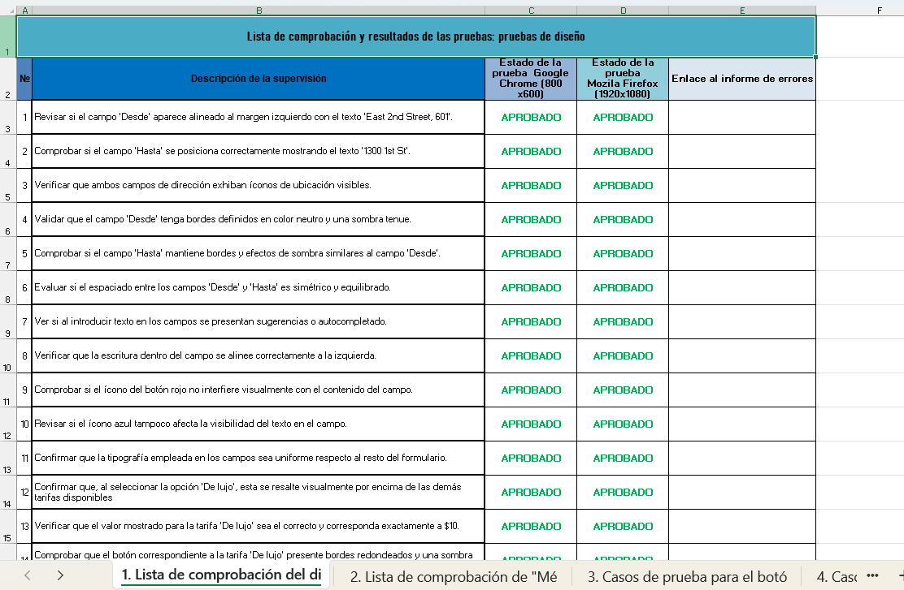
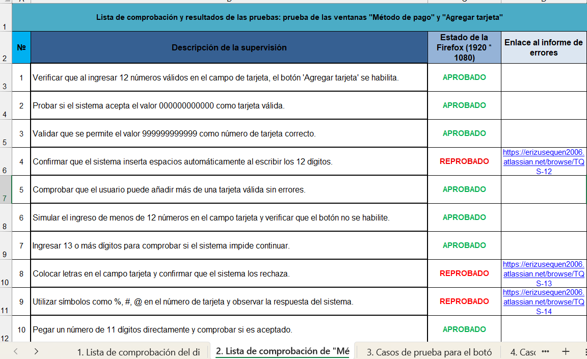
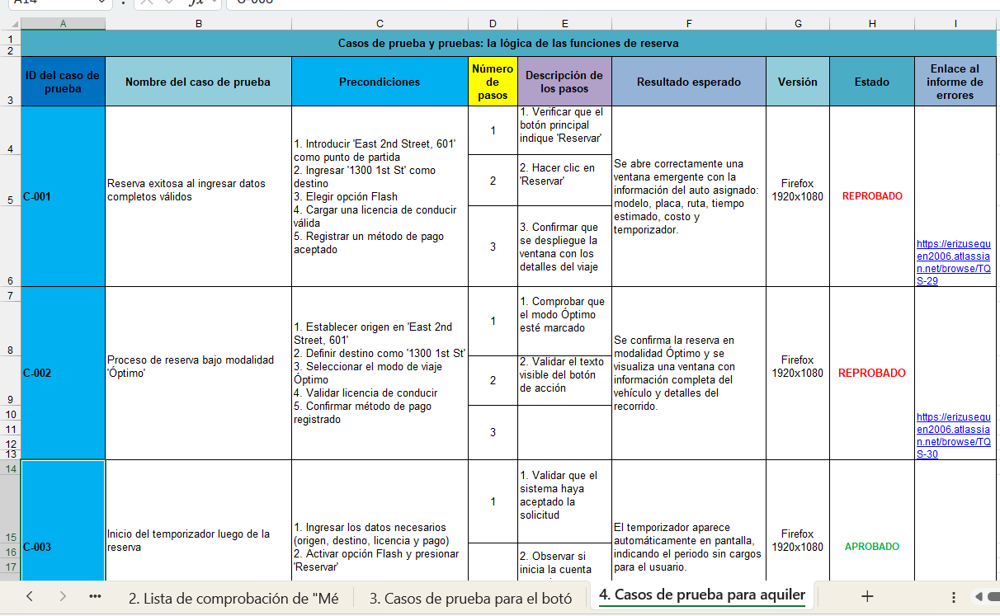

01
Urban Routes
Pruebas de Compatibilidad y Funcionalidad en Aplicación Web
Contexto
Probé la funcionalidad de una aplicación web de transporte compartido en distintos entornos, identificando inconsistencias de comportamiento entre Chrome y Firefox.
Mi rol
Analicé requisitos funcionales y de diseño, diseñé y ejecuté casos de prueba basados en escenarios reales, y apliqué checklists de validación para mejorar la cobertura del testing.
Impacto
Detección de diferencias de comportamiento entre entornos y mejora en la validación de requisitos funcionales.